PBX — IVR (menú de voz)¶
Qué es¶
El IVR (también llamado "telefonía por computadora") es el motor de menús de voz de AsterCC: guía al cliente con locuciones, captura su respuesta (por teclado, o delegando a un webservice), y decide a dónde enrutar la llamada según esa respuesta. Puede resolver desde un simple "para ventas marque 1, para soporte marque 2" hasta flujos que consultan un sistema externo en tiempo real (ej. saldo de una tarjeta) y arman una respuesta hablada con ese dato.
Cómo se usa¶
1. Crear el flujo principal de IVR¶
Un flujo principal tiene número interno propio y puede tener múltiples subflujos enlazados entre sí; solo el flujo principal se puede marcar directamente.
| Campo | Qué define |
|---|---|
| Nombre del IVR | Identifica el propósito del flujo |
| Equipo | El sistema completa automáticamente qué voces y colas están disponibles según el equipo elegido |
| Número interno | Numérico, único dentro del equipo |
| Destino de fallo / destino específico | A dónde va la llamada si: se alcanza el máximo de repeticiones, falla una llamada a webservice, falla la reproducción de voz, el nodo no tiene destino configurado, no hay coincidencia de enrutamiento, o falla una transferencia directa a extensión |
| Voz de fallo final | Actualmente sin uso |
| Enlace de eventos de IVR | URL a la que se envían los eventos de este IVR (por defecto, se registran en archivo) — se puede usar para que un sistema externo rastree las decisiones del cliente en el IVR durante una marcación predictiva |
| Timeout de webservice | Tiempo máximo de espera de cualquier acción que llame a un webservice dentro de este flujo, antes de considerarlo fallido |
| Máximo de repeticiones | Veces que se puede reingresar a este mismo flujo antes de ir al destino de fallo |
| Guardar variables | Envía variables del flujo junto con los eventos de llamada hacia el agente o el sistema receptor de eventos |
| Acción al colgar | Qué ejecutar si el cliente cuelga dentro del IVR — puede ser una llamada a webservice |
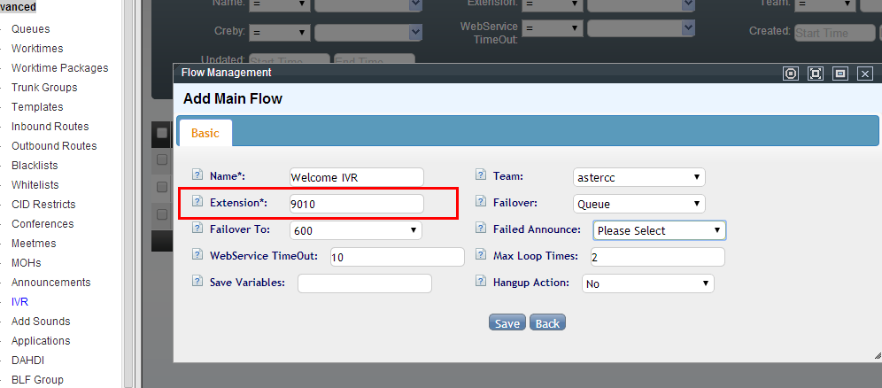
2. Configurar acciones dentro del nodo¶
Un nodo de IVR ejecuta una o más acciones en orden. Tipos disponibles:
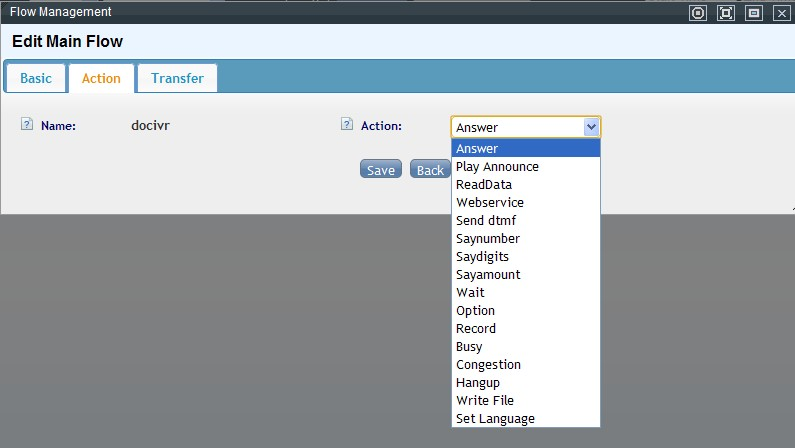
| Acción | Qué hace |
|---|---|
| Responder | Contesta la llamada — casi siempre la primera acción de un flujo |
| Reproducir voz | Reproduce una locución; ignora entradas de teclado mientras suena |
| Reproducir y capturar dígitos | Reproduce una locución y captura la respuesta del teclado — se detiene al primer dígito presionado |
| Webservice | Llama a un servicio externo |
| Enviar DTMF | Envía tonos (marcar un número o extensión) |
| Anunciar dígitos / número / monto | Lee en voz alta un valor: dígito por dígito, de corrido, o como cifra monetaria |
| Esperar | Pausa el flujo N segundos antes de continuar |
| Operación | Cálculo numérico o de texto, guardado en una variable |
| Dejar mensaje | Deriva a una aplicación de mensaje de voz |
| Ocupado / bloqueado | Tono de ocupado (largo) o bloqueado (corto), y cuelga |
| Colgar | Termina la llamada |
| Escribir archivo | Escribe un valor en un archivo del servidor |
| Establecer idioma | Cambia el idioma activo del flujo |
| Leer archivo de configuración | Lee un valor desde un archivo de configuración del servidor a una variable |
| Enviar fax | Envía un fax desde una extensión de fax (o automáticamente con número indicado) |
Reproducir voz / reproducir y capturar dígitos — fuentes de audio¶
| Fuente | Cómo funciona |
|---|---|
| Sistema | Usa un archivo ya cargado en gestión de voz de llamada |
| Webservice | Obtiene dinámicamente la ruta (o un texto) del archivo a reproducir llamando a un servicio externo |
| HTTP | Igual que webservice pero vía una llamada HTTP simple |
| Ruta de voz | Ruta absoluta fija a un archivo en el servidor |
| Cadena de texto | Reproduce letra por letra un texto (a-z A-Z 0-9 # *) |
Parámetros comunes: cantidad de repeticiones, destino y voz de fallo, descripción.
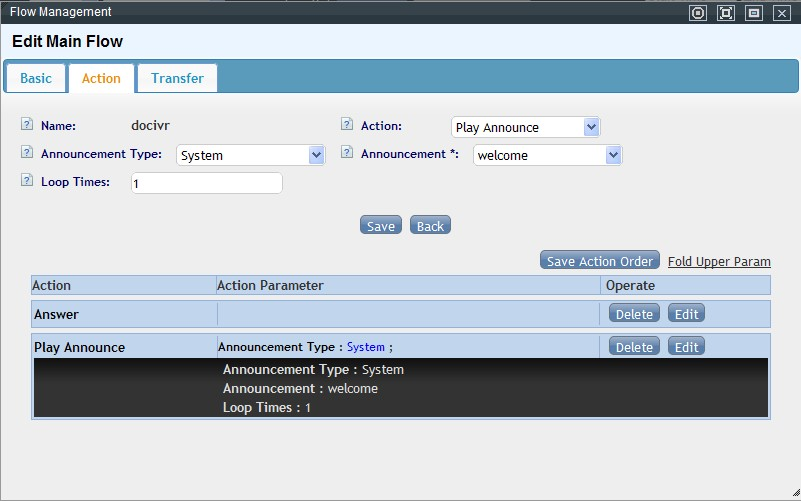
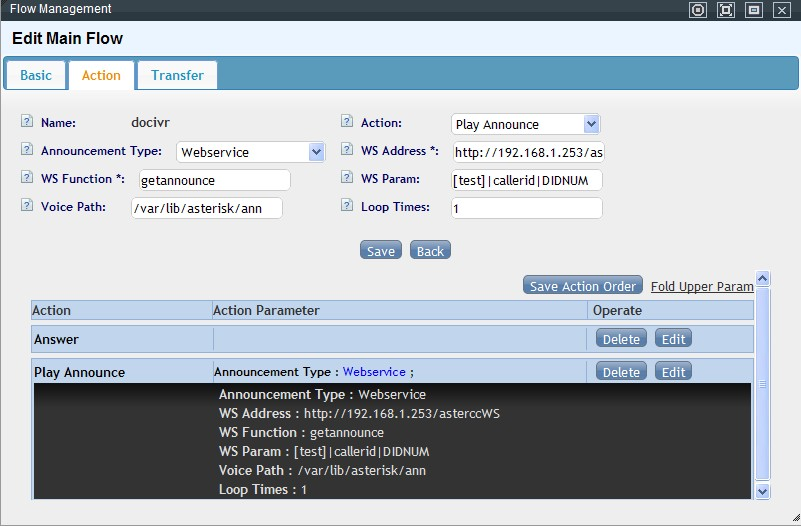
Reproducir y capturar dígitos — parámetros específicos¶
| Campo | Qué controla |
|---|---|
| Guardar en variable | Por defecto la entrada va a inputcode (solo válida dentro del nodo actual); si necesitas que persista entre subflujos, defínela aquí en mayúsculas |
| Límite de dígitos (mín/máx) | 0 = sin límite; si la entrada es menor al mínimo se considera error; al llegar al máximo se corta automáticamente |
| Timeout de entrada | Segundos de inactividad tras los que se da la captura por terminada |
| Voz / repetir menú en timeout | Qué reproducir y si reinicia el menú cuando se agota el tiempo sin input |
| Voz / repetir menú en error | Igual, pero cuando la entrada no cumple el mínimo de dígitos |
| Verificar origen de transferencia | — |
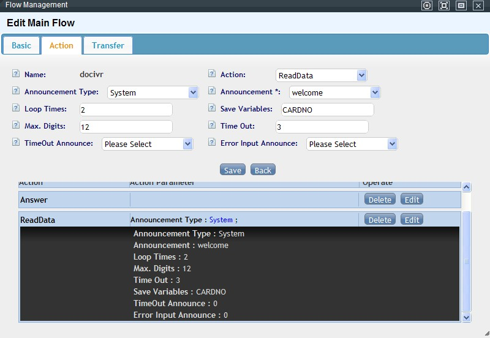
La captura también termina si el cliente presiona # (tecla de fin reservada — no debe asignarse como opción de menú).
Webservice — cómo pasar y recibir parámetros¶
WS Dirección: http://<host>/servicio.php?wsdl
WS Método: getSaldo
WS Parámetros: callerid|sessionid|CURLANG|[abc.txt]|CARDNO
- Los parámetros van separados por
|. - Pueden ser variables internas del sistema (tabla abajo), variables propias del flujo, o texto literal entre corchetes (
[texto]). - El valor de retorno del webservice debe ser un string; si trae varios valores, van separados por
|y el primero se guarda automáticamente eninputcode. - El campo "valor de retorno" define un nombre (en mayúsculas) para cada valor devuelto, en el mismo orden.
- El campo "variable global" promueve uno o más de esos valores a variables reutilizables en todo el flujo (no solo el nodo actual).
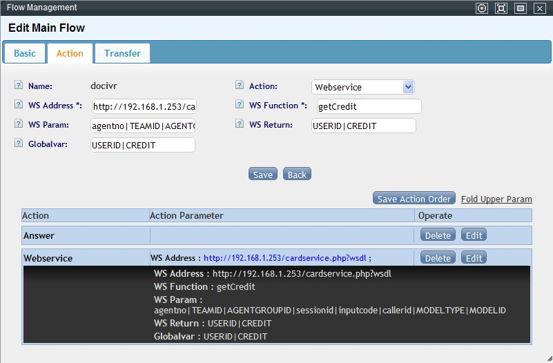
Variables internas disponibles:
| Variable | Significado |
|---|---|
systime |
Hora actual del sistema |
inputcode |
Última entrada de teclado del cliente |
callerid |
Número que llama |
didnumber |
DID de entrada |
sessionid |
Identificador único de la llamada |
TEAMID |
ID del equipo |
TEAMIDENTITY |
Identificador (slug) del equipo |
ENTERSYS |
Hora en que la llamada entró al sistema |
CURLANG |
Idioma actual del flujo |
CURIVRID |
ID del nodo de IVR actual |
AGENTNO |
Último número de agente relacionado con la llamada |
AGENTGROUPID |
Último grupo de agentes relacionado |
MODELTYPE |
Tipo de módulo de negocio de origen |
MODELID |
ID de ese módulo de negocio |
Warning
Los nombres de variable son sensibles a mayúsculas/minúsculas.
Operación — cálculos y manejo de texto¶
| Tipo de dato | Operaciones disponibles |
|---|---|
| Numérico | Calcular (+ − × ÷), comparar (> < = >= <= !=), asignar |
| Texto | Concatenar, comparar, asignar, extraer N caracteres por la derecha, extraer N caracteres por la izquierda, buscar subcadena, recortar cadena (desde-hasta), largo de cadena |
El resultado siempre se guarda en la variable de resultado indicada.
3. Definir el destino (enrutamiento)¶
Tras capturar una entrada (o el resultado de un webservice), se define a dónde va cada valor posible:
| Destino | Comportamiento |
|---|---|
| Extensión | Transfiere directo a un teléfono/agente |
| Voz de entrada | Reproduce una locución (útil junto con la acción "obtener datos" para leer en voz alta un resultado) |
| Otro IVR | Encadena a otro flujo — permite menús anidados de varios niveles |
| Cola | Envía a una cola/grupo de agentes; puede omitir el anuncio de la cola, o enrutar automáticamente a cualquier cola libre |
| Grupo de timbrado | Timbra un conjunto de extensiones según su estrategia |
| Aplicación | Deriva a una aplicación personalizada |
| Sala de conferencia | Une al cliente a una conferencia |
| Buzón de voz | Permite dejar un mensaje |
| Ocupado | Tono de ocupado y cuelga |
| Colgar | Cuelga directamente |
| Dispositivo de fax | Espera señal de fax entrante |
| Ruta saliente | Reenvía la llamada por una ruta de salida |
| Grabar llamada | Activa la grabación de la llamada a partir de ese punto del flujo |
| Enviar DTMF | Envía tonos DTMF antes de continuar (además de existir como acción de nodo) |
| Solicitud de devolución de llamada | Guarda el número que llama y genera una solicitud de rellamada (callback) que se envía a los agentes |
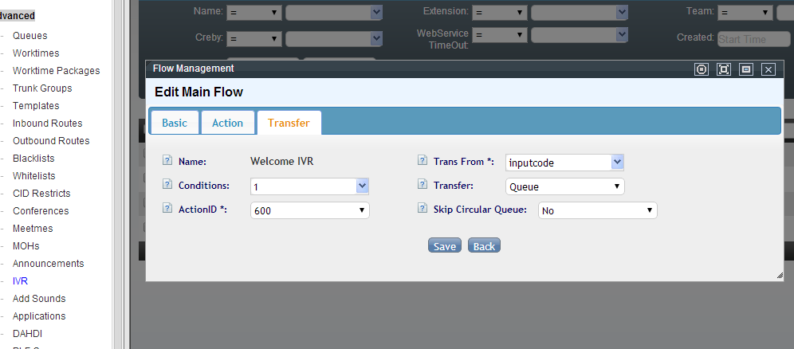
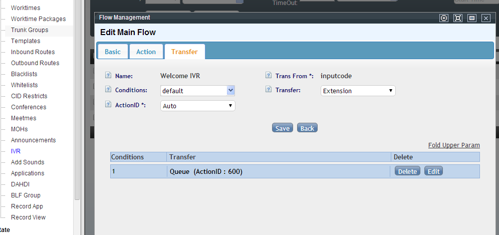
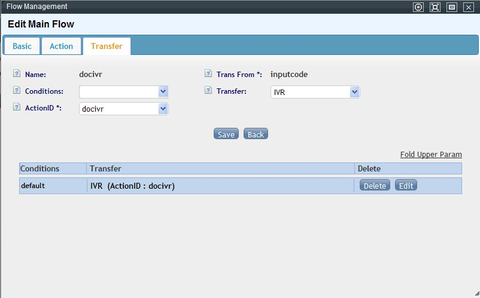
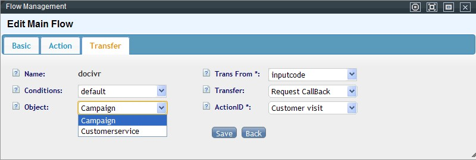
Cuando el destino es "voz de entrada", hay opciones adicionales para encadenar una acción posterior (anunciar dígitos/número/monto usando el valor obtenido), una voz de retorno (ej. "para regresar al menú anterior, marque "), y una voz posterior (ej. "para repetir, marque 1"*) — todas pensadas para mejorar la experiencia cuando el flujo lee en voz alta un dato dinámico.
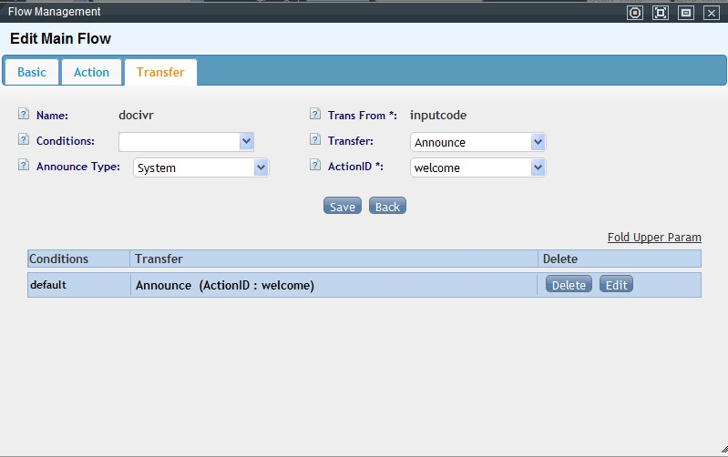
4. Ejemplo completo — consulta de licencias por número de serie¶
Objetivo: "Bienvenido, para consultas de producto marque 1, para soporte técnico marque 2, para consultar su licencia marque 3" — la opción 3 pide un número de serie, lo envía a un webservice, y lee en voz alta el resultado.
Preparación:
1. Confirmar que existen los grupos de agentes de servicio al cliente y soporte técnico, con extensiones internas funcionando.
2. Grabar 4 locuciones en WAV 16 bits / 8kHz / mono:
- Voz 1: mensaje de bienvenida con las 3 opciones.
- Voz 2: "ingrese su número de serie, termine con #".
- Voz 3: "su cantidad de licencias autorizadas es".
- Voz 4: "no se encontró información de este producto".
3. El desarrollador implementa un webservice que recibe el número de serie y devuelve, como texto, <destino>|<cantidad> — ej. 1|50 (encontrado, 50 licencias) o 0|0 (no encontrado).
Pasos:
1. Subir las 4 locuciones en Gestión de archivos de voz (subida individual o por lote).
2. Crear 4 registros en Gestión de voz de llamada, uno por locución, asociando cada uno a su archivo y al idioma correspondiente.
3. Crear el nodo "Ingresar número de serie": acción "reproducir y capturar dígitos" con la Voz 2, tipo "obtener datos" vía webservice, dirección/método del servicio, parámetro inputcode (el número ingresado), variable de retorno LICNO. Configurar destino: si el primer valor de retorno es 1, reproducir Voz 3 + anunciar la variable LICNO como monto; si es 0, reproducir Voz 4.
4. Crear el nodo principal "Menú de bienvenida": reproduce la Voz 1, con tres destinos — opción 1 → cola de servicio al cliente, opción 2 → cola de soporte técnico, opción 3 → el nodo del paso 3.
5. Probar marcando el número interno del nodo principal desde una extensión interna.
Diagnóstico de problemas comunes¶
| Síntoma | Causa probable |
|---|---|
| El webservice nunca recibe la llamada | Revisar la dirección/método configurados, restricciones de red/firewall entre el servidor y el webservice, o probar el servicio de forma aislada |
| El cliente presiona teclas y el IVR no avanza | Revisar el modo DTMF en la plantilla de la extensión (llamadas internas) o del troncal (llamadas externas) — debe coincidir con lo que espera el operador/dispositivo |
| La llamada se corta sin reproducir la voz esperada | Confirmar que el archivo de voz configurado en ese nodo realmente existe |
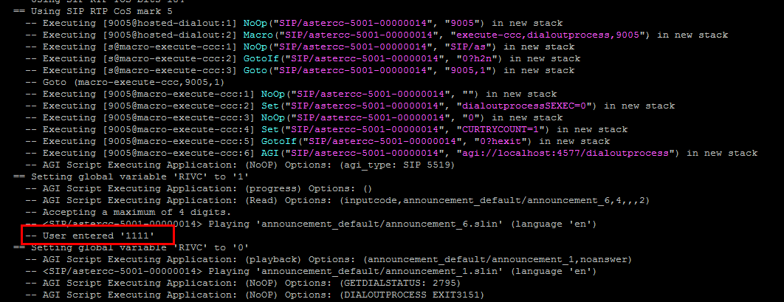
Referencia rápida¶
| Necesito | Dónde |
|---|---|
| Crear/editar un flujo de IVR | PBX avanzado → Telefonía por computadora |
| Ver variables internas disponibles | Tabla de variables internas (arriba) |
| Depurar por qué mi webservice no responde | Escribir a un archivo dentro del propio webservice para confirmar si el IVR lo está llamando |
| Anidar menús | Destino = "Otro IVR" apuntando a un segundo flujo |
Fuentes¶
raw/zh/模块使用说明/pbx高级管理/电脑话务.txtraw/zh/模块使用说明/ivr/设定一个语音菜单ivr.txtraw/en/module_manual/advanced/ivr.txtraw/en/module_manual/ivr/configuring_a_simple_ivr.txt